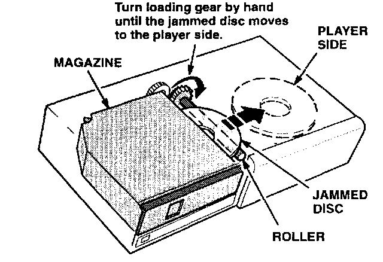
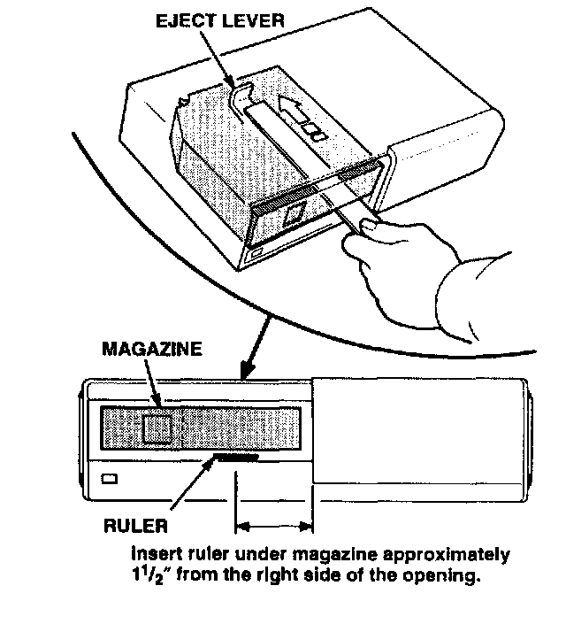
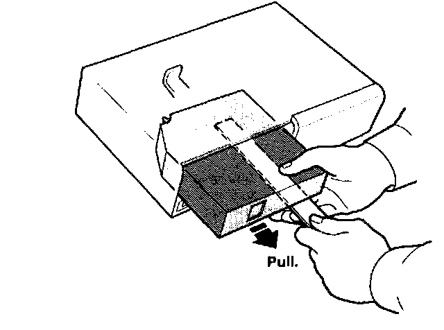

One-Piece Door Model
1. Remove the changer from the vehicle.2. Remove the rear cover plate from the changer, and look for a jammed disc.

3. If a disc is jammed between the player and the magazine, turn the loading gear until the disc returns to the player mechanism. Do not attempt to reload the disc back into the magazine.
4. After the disc is loaded into the player mechanism, turn the changer so that its front is facing you.
5. Insert a thin stainless steel ruler or a "Slim Jim" under the magazine, about 1-1/2" from the right side of the opening.

6. Push the ruler in until it presses against the eject lever at the back of the unit.

7. Slowly remove the ruler and magazine at the same time.